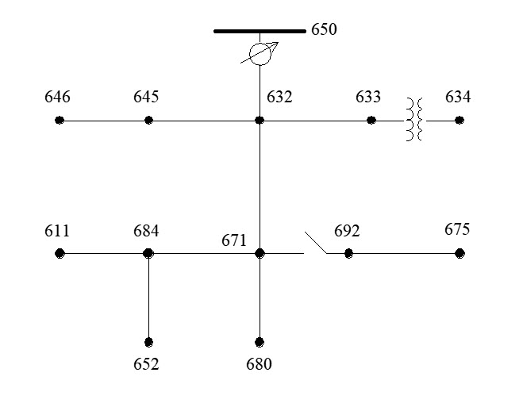
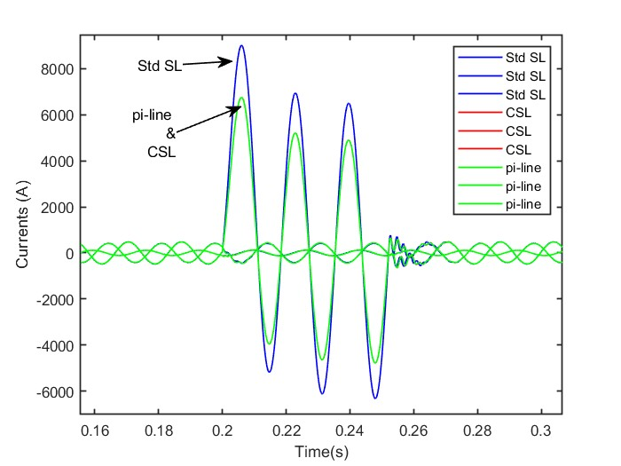

IEEE 13 node distribution feeder with Compensated Stubline Model

Fig.1 IEEE 13 node distributon feeder diagram
Summary
This model is used to demonstrate a novel decoupling method, the Compensated Stubline[1], on the IEEE 13 node test feeder model[2].
In the model, a Compensated Stubline Model (CSL) is inserted in place of the line between nodes 632 and 671 and splits the network equation in two halves.
The selected line is 2000 ft (0.61 km). The stubline that replaces it has a one time step delay and with the same total inductance, so it could be considered as having an equivalent length of ~7km at 25 us.
This increase line length typically bring some errors due the increase capacitance of the stubline line (C=Ts^2/L). The Compensated Stubline Model minimize the error of the stubline usage by compensating this reactive power.
Test case
In this test we compare 3 different simulations:
1- Simscape with nominal pi-line
2- Simscape with Compensated Stubline Model (CSL)
3- Simscape with standard stubline (no compensation)
Simulation time step is 25 us.
A single-phase-to-ground fault is made at bus 671 for the test. The figure compares the 3 results for the main feeder input current (bus 632) and clearly shows that all curves match very well during the fault except for the non-compensated stubline case.

Fig.2 Input feeder current during the single-phase-to-ground fault
References
[1] B. Ahmed, A. Abdelgadir, N. Saied and A. Karrar, "A Compensated Distributed-Parameter Line Decoupling Approach for Real Time Applications" in IEEE Transactions on Smart Grid, doi: 10.1109/TSG.2020.3033145. [2] "IEEE 13 Node Test Feeder standard document", IEEE Distribution System Analysis Subcommittee